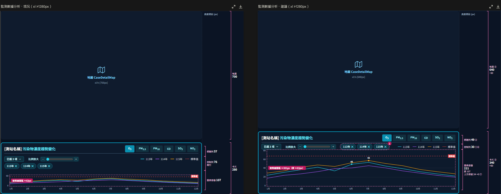
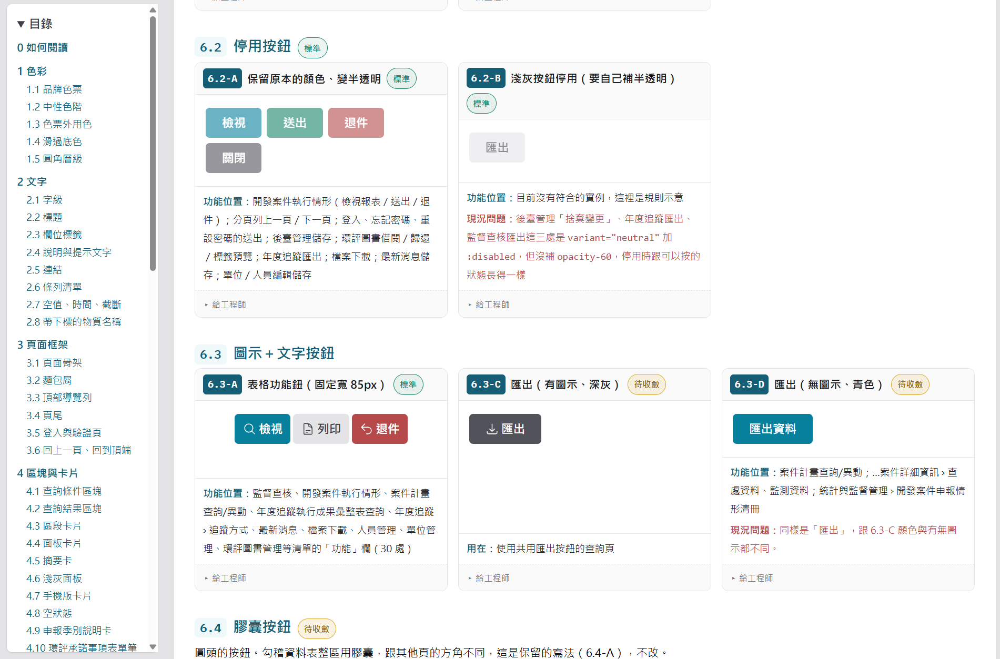
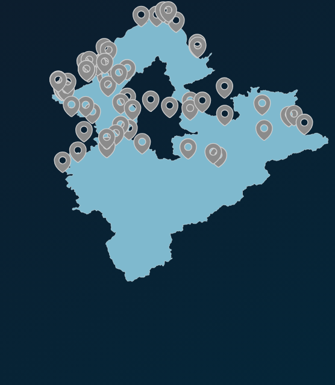
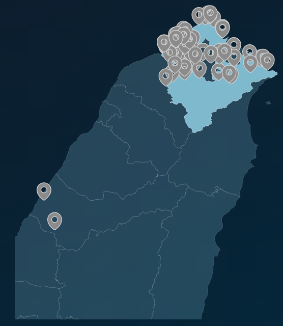

AC 10 會議
AI Coding 心得分享
中華 8 樓前端團隊｜[講者姓名]
使用歷程
我從偶爾使用 AI，到現在大量使用 Agent
1
聊天式 AI
拿來問問題、查資料，或解決比較單純的程式問題
2
嘗試 Agent
約一年前，用免費版 acli rovodev、Gemini CLI。能讀專案，但模型還不成熟
3
慢慢發現價值
各家模型持續進步，能協助的開發任務越來越多，使用頻率也越來越高
4
現在
日常使用 Agent
主要使用 Claude Code，當作日常開發的協作工具
一開始只是抱著嘗試的心態，看看 Agent 到底能幫上多少忙。
AI Coding 心得分享
02 / 10
日常使用方式
現在，AI 已經是我的日常開發夥伴
簡單的事情
明確、範圍小，直接交代需求
複雜的事情
牽涉多個元件，先討論再實作
AI 參與的日常工作
UI 實作
程式碼調整
架構討論
問題排查
AI Coding 心得分享
03 / 10
Claude Design
不只聊天，還能在畫布上探索 UI 設計
怎麼開始
在 Claude Code 輸入 /design
跟一般 AI 不同
直接產生視覺化的設計
除了對話描述需求，成果會在畫布上呈現，可以繼續調整
我怎麼用它
當作協助思考 UI 的工具
還不確定怎麼排、有幾種方向時先探索，確認後再交給 Claude Code 實作
AI Coding 心得分享
04 / 10
產出範例
給它現況畫面，它會提出另一種配置

左 現況
右 Claude Design 提出的另一種配置
粉色線 繪圖區高度
AI Coding 心得分享
05 / 10
實戰案例一
用 AI 整理 UI 元件圖鑑，改善設計溝通
原本遇到的問題
- 新設計圖和既有畫面風格不一致，專案卻沒有明確的 UI 規範可參考
- 有些樣式依照既有慣例，有些各自撰寫
- 畫面和環工想像有落差，容易來回溝通
我用 AI 做的事
1
盤點專案中的 UI 元件
2
標示用法一致、與各自撰寫樣式的地方
3
整理成 UI 元件圖鑑
AI 不只幫我寫程式，也幫我整理資訊，讓模糊的問題比較好討論
AI Coding 心得分享
06 / 10
實戰案例一
有了圖鑑，環工只需要二選一

標準：大量使用／共用元件
待收斂：只有少數地方使用
Issue 留言範例
這裡和設計圖不一樣，請選擇要採用哪一種：
按鈕樣式採用圖鑑 6.3-A
以設計稿樣式建立新規範
樣式確認要來回溝通幾次？
以前
5 次以上
現在
1～2 次
AI Coding 心得分享
07 / 10
實戰案例二
地圖功能，先做出畫面再討論
原本遇到的問題
- 縣市地圖由 D3.js 計算座標畫出
- 畫面只顯示該縣市的範圍
- 有些案場歸縣市管，卻在範圍外很遠的地方
- 例如高速公路、離岸風機
我怎麼做
1
會前預習環工的簡報，想到解決方向
2
請 AI 先做出初版畫面，不必先讀完文件
3
帶去會議當作討論素材
4
環工建議加上拖拉、縮放

原本：範圍外的案場畫不出來

縣市範圍外的案場
初版：範圍涵蓋所有案場
有畫面可以討論，方向在會議上就確認了
AI Coding 心得分享
08 / 10
結語
文字說不清楚的事，先讓它看得見
案例一
UI 元件圖鑑
有了具體參考，環工可以直接選擇
案例二
地圖初版畫面
直接針對畫面討論，不必各自想像
AI 幫我更快整理、做出雛形；結果對不對，還是要自己確認與驗證
AI Coding 心得分享
09 / 10
這是我目前的做法，
也還在慢慢調整。
謝謝大家
AI Coding 心得分享
10 / 10